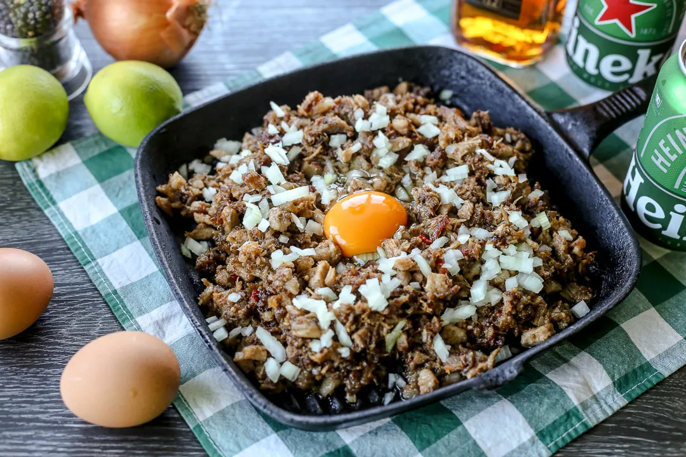

SISIG

Description
Sisig (/ˈsiːsɪɡ/[2] Tagalog pronunciation: ['sisig]) is a Filipino dish made from pork jowl and ears (maskara),
pork belly, and chicken liver which is usually seasoned with calamansi, onions, and chili peppers. It originates
from the Pampanga region in Luzon.
Sisig is a staple of Kapampangan cuisine. The city government of Angeles, Pampanga, through City Ordinance No.
405, series of 2017, declared sizzling sisig babi ("pork sisig") as a tangible heritage of Angeles City.
Learn more
Ingredients
- 1 lb pig ears
- 1 1/2 pork belly
- 1 piece onion minced
- 3 tablespoons soysauce
- 1/4 teaspoon ground black pepper
- 1 knob ginger minced (optional)
- 3 tablespoons chili flakes
- 1/2 teaspoon garlic powder
- 1 piece lemon or 3 to 5 pieces calamansi
- 1/2 cup butter or margarine
- 1/4 lb chicken liver
- 6 cups water
- 3 tablespoons mayonnaise
- 1/2 teaspoon salt
- 1 piece egg optional
Instructions
- Pour the water in a pan and bring to a boil. Add salt and pepper
- Put-in the pig's ear and pork belly then simmer for 40 minutes to 1 hour (or until tender)
- Remove the boiled ingredients from the pot then drain excess water
- Grill the boiled pig's ears and pork belly until done
- Chop the pig's ears and pork belly into fine pieces
- In a wide pan, melt the butter or margarine. Add the onions, cook until the onions are soft
- Put-in the ginger and cook for 2 minutes
- Add the chicken liver. Crush the chicken liver while cooking it in the pan
- Add the chopped pig's ears and pork belly. Cook for 10-12 minutes
- Put-in the soy sauce, garlic powder, and chilis. Mix well
- Add salt and pepper to taste
- Put-in the mayonnaise and mix with other ingredients
- Transfer to a serving plate. Top with chopped green onions and raw egg
- Serve hot. Share and enjoy! (add lemon or calamansi before eating)
Check these out!
Adobo
Kaldereta
Home